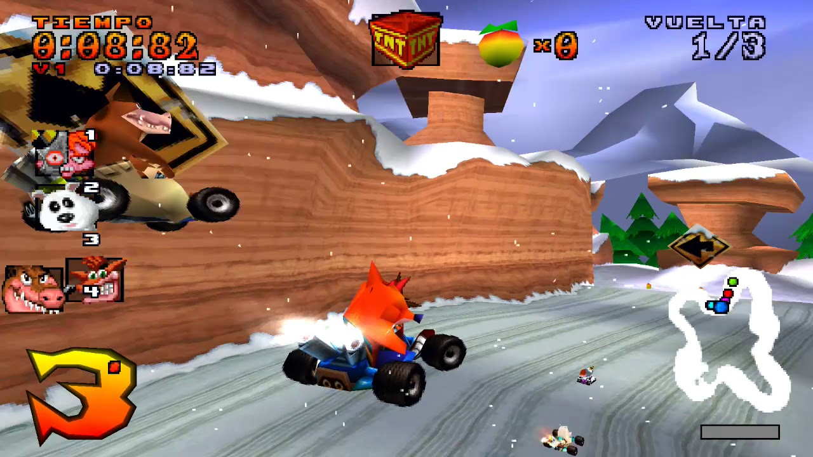

In Crash Team Racing for the PS1, you're in for a wild ride with Crash Bandicoot and friends.
Zoom through crazy tracks, use zany power-ups to outwit opponents, and enjoy modes like adventure, multiplayer battles, and time trials. It's a thrill-packed kart racing experience!
Some CharactersCrash Dingodile  Cortex  |
Some BossesPapu Papu Pinstripe  Ripperoo  |
Some Pick-upsWarp OrbThe giant blue orb is this epic weapon that's all about causing mayhem. It zeroes in on the player leading the pack, but here's the twist – it'll also smack any other racers it bumps into on its way there. And when you juice it up? It goes full beast mode, targeting and hitting every single racer ahead of you on the track. It's like the ultimate equalizer when you're trying to claw your way to the front! Turbo The Turbo power-up gives you a quick speed boost, perfect for squashing enemies and bouncing off them for extra fun. Juice it up, and you'll enjoy a longer, slightly faster boost, taking your race to the next level! Tracking Missile The tracking missile locks onto the nearest racer ahead and can send their kart tumbling upon impact. When targeted, a cross-hair warns you of the incoming missile. You can snag it as a single or triple shot. Juice it up for a faster, more accurate missile, making it a real game-changer in the race! |
|  |